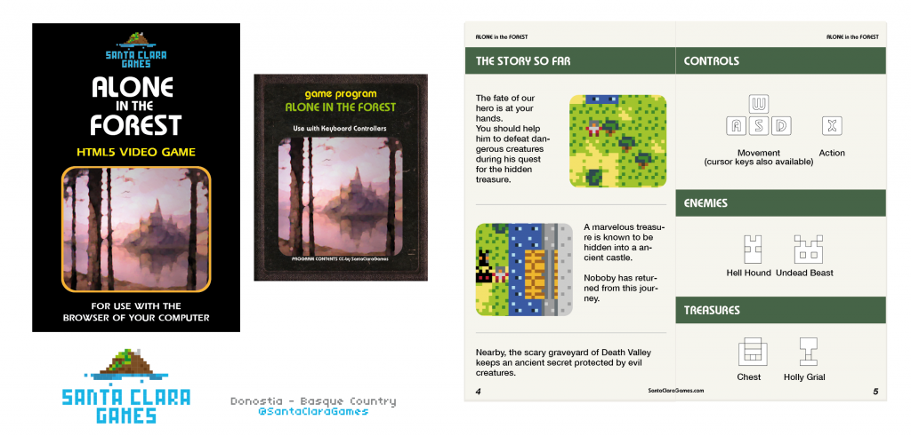

Alone in the Forest (Global Game Jam 2014)
"Alone in the Forest" is an old-school exploration game created for the Global Game Jam 2014 based on the theme:
The game’s machanics deals with the player’s concepts of videogames and explores how different kind of players seeing the same thing interpret them in their own way.
The player’s goal is to find the chest full of gold hidden inside of an ancient castle. Click here if you like to play the game.
We used the amazing Puzzlescript engine to develop and explore the ideas behind this videogame. Puzzlescript is a fabulous tool that allows you to rapid prototype your videogame and see if your idea works or not.
Videogame in action
Videogame Manual
